掌機 - Q8 - CPU超頻
CORE-VDD電壓是1.14V
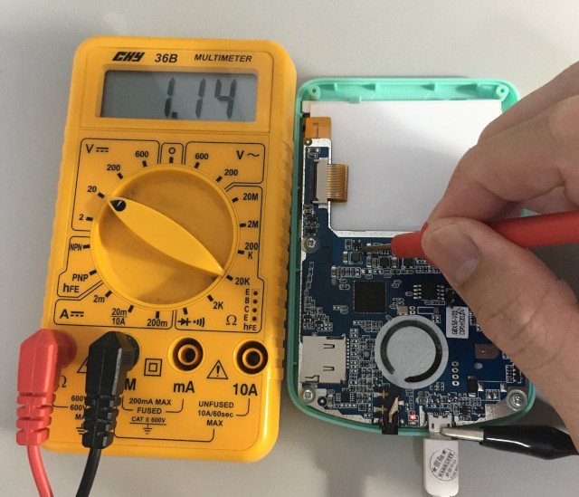
兩顆電阻都是156K
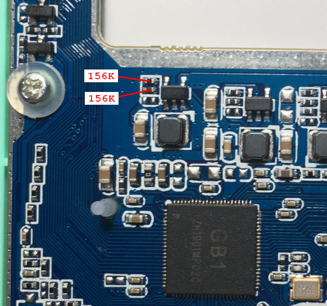
替換成160K和442K電阻
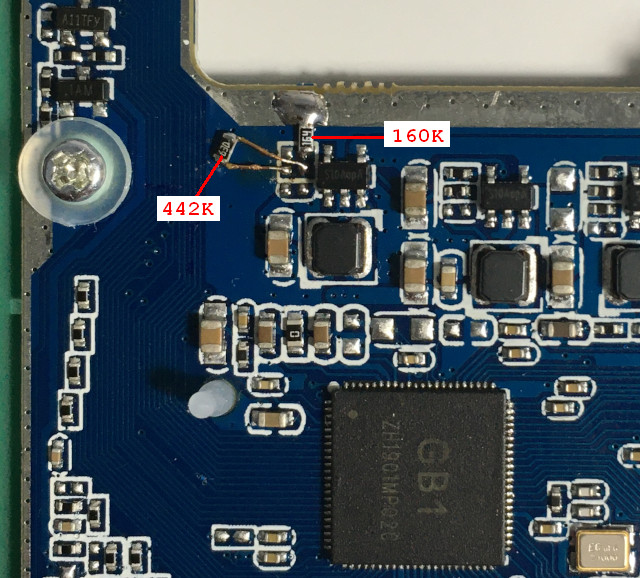
電壓2.23V
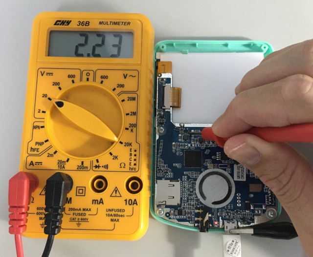
PS1惡魔城，CPU=672MHz，關閉FrameSkip，54 FPS，CPU=95%
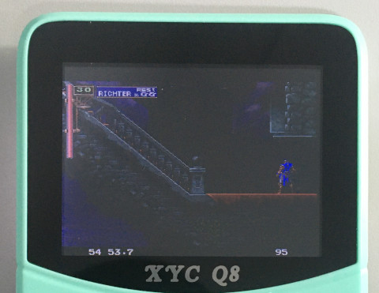
PS1鐵拳3，CPU=672MHz，關閉FrameSkip，36 FPS，CPU=96%
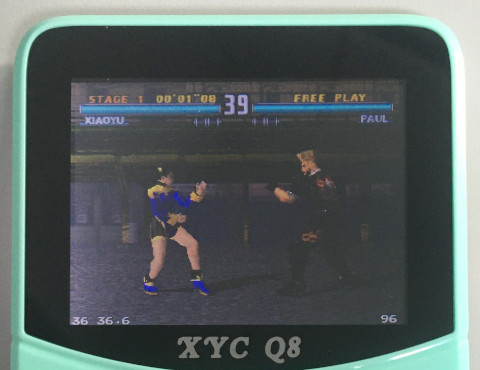
PS1惡魔城，CPU=1536MHz，關閉FrameSkip，60 FPS，CPU=75%
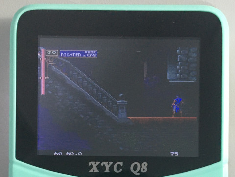
PS1鐵拳3，CPU=1536MHz，關閉FrameSkip，40 FPS，CPU=94%
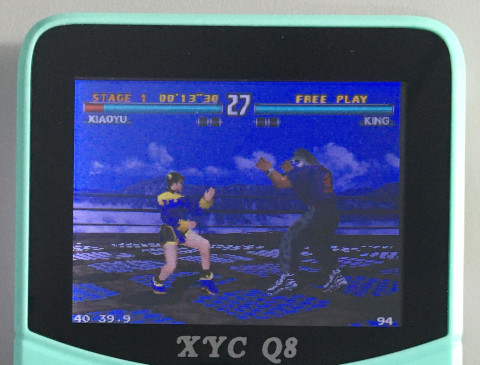
PS1惡魔城，CPU=1632MHz，關閉FrameSkip，60 FPS，CPU=59%
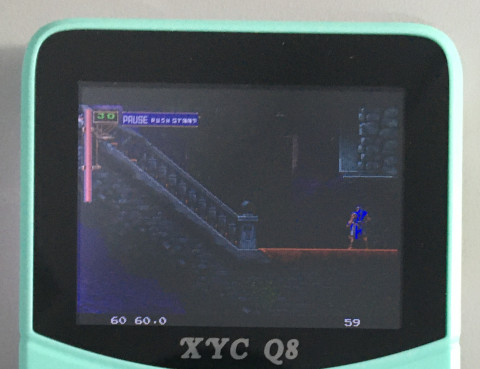
PS1鐵拳3，CPU=1632MHz，關閉FrameSkip，44 FPS，CPU=96%
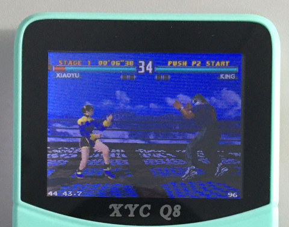
CORE-VDD電壓是影響溫度的關鍵
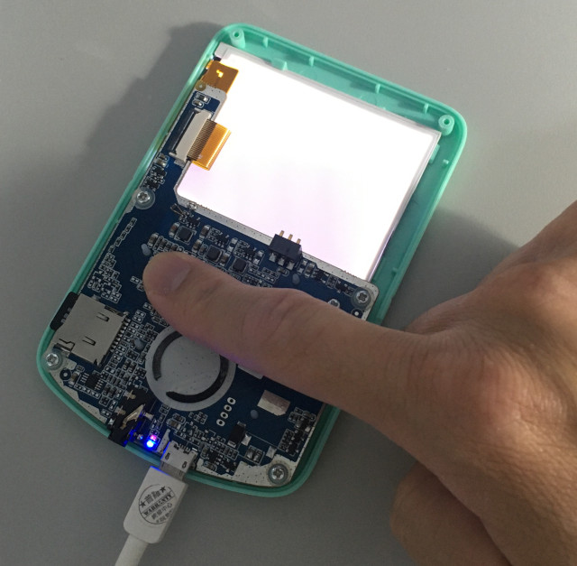